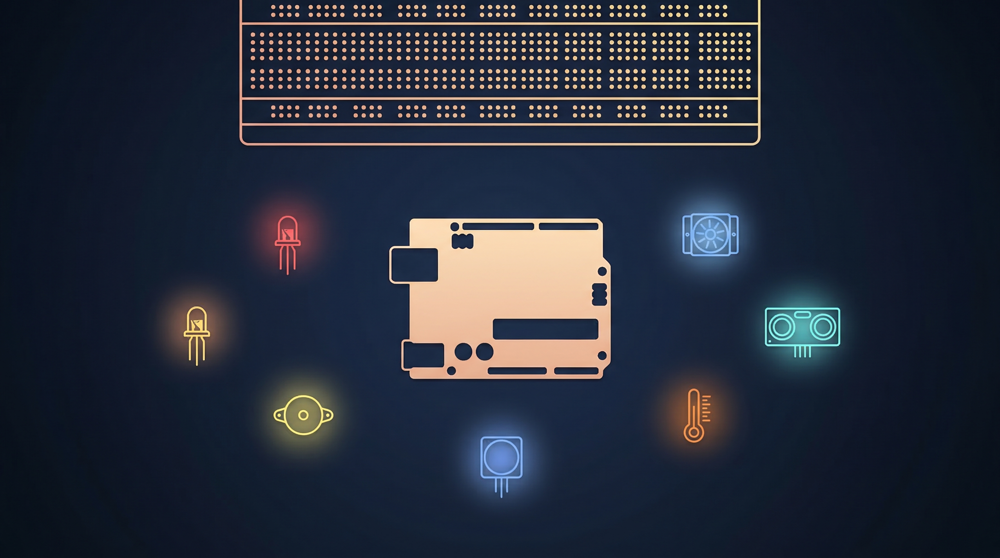

[3차시] 아두이노 실습🦸🏻♂️LED 센서👨🏻🔧부저 센서👩🏻🔧인체 감지 센서 👩🏻🔧초음파 센서🤖온도 센서🎇조도 센서🎇리모컨🚀서보 모터🚀스텝 모터🛸LCD 액정 표시 장치🪂조이스틱 모듈🏗️RFID🔄 아두이노 실습 교재1차시_아두이노 시작하기.pdf2차시_센서실습하기(LED).pdf3차시_센서실습하기(부저).pdf4차시_인체감지센서.pdf5차시_초음파센서.pdf6차시_온도센서.pdf7차시_조도센서.pdf8차시_서보모터.pdf9차시_스텝모터.pdf10차시_LCD.pdf11차시_조이스틱모듈.pdf12차시_리모컨.pdf13차시_RFID.pdf